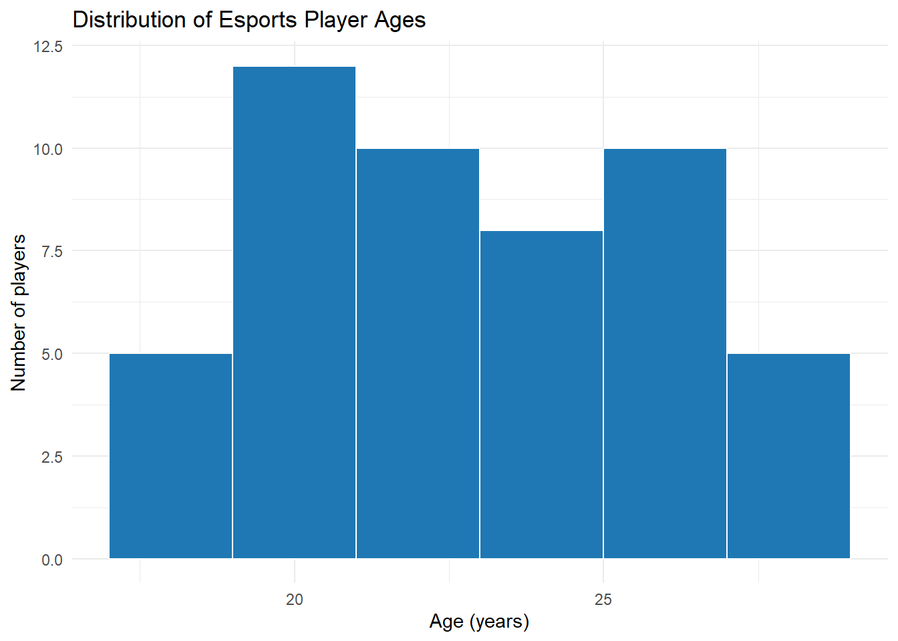
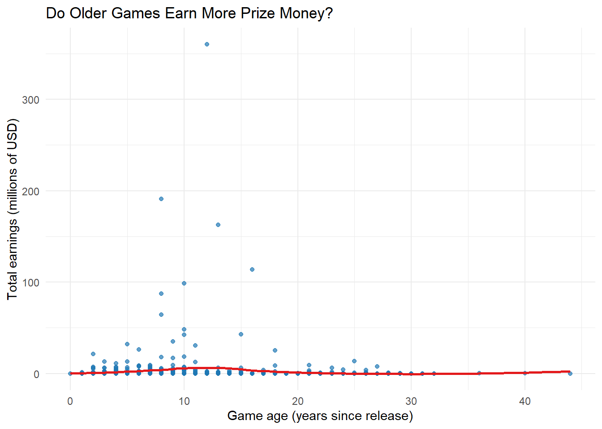
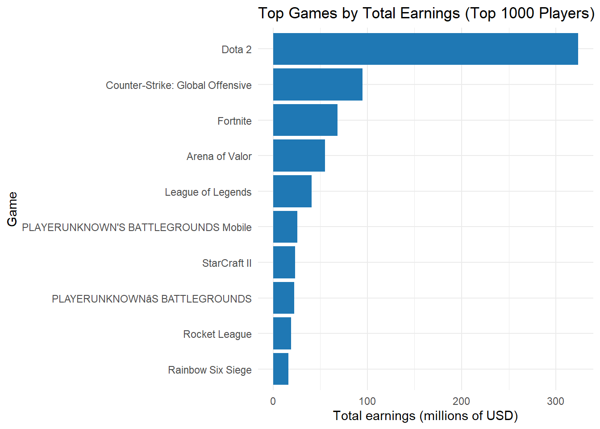

Code
#global setup: load packages used across all questions
pacman::p_load(tidyverse, kableExtra, plotly)
theme_set(theme_minimal())Our project investigates how esports professionals compare to software engineers in terms of income, age, and career patterns. Esports is often seen as a short, intense career with high earnings for only a small number of players, while software engineering is usually described as a long-term, stable profession.
Each member of Group 9 is responsible for one part of this story:
Together, these sections form a complete comparison between esports and software engineering careers.
#global setup: load packages used across all questions
pacman::p_load(tidyverse, kableExtra, plotly)
theme_set(theme_minimal())players<- readr::read_csv("data/esports_players_top1000_clean.csv")
team_perf <- readr::read_csv("data/esports_team_performance_clean.csv")
games <- readr::read_csv("data/general_esport_games_clean.csv")
glimpse(players)Rows: 1,000
Columns: 8
$ rank <dbl> 1, 2, 3, 4, 5, 6, 7, 8, 9, 10, 11, 12, 13, 14, 15,…
$ player_id <chr> "N0tail", "JerAx", "Miposhka", "ana", "Ceb", "Yato…
$ player_name <chr> "Johan Sundstein", "Jesse Vainikka", "Yaroslav Nai…
$ highest_paying_game <chr> "Dota 2", "Dota 2", "Dota 2", "Dota 2", "Dota 2", …
$ total_overall_usd <dbl> 7184163, 6486624, 6227771, 6024412, 5949443, 59327…
$ total_game_usd <dbl> 7172437, 6486075, 6227771, 6024412, 5949443, 59327…
$ pct_of_total_num <dbl> 99.84, 99.99, 100.00, 100.00, 100.00, 100.00, 100.…
$ source_url <chr> "https://www.esportsearnings.com/players/highest-e…glimpse(team_perf)Rows: 50
Columns: 11
$ team_id <dbl> 0, 0, 0, 0, 0, 1, 1, 1, 1, 1, 2, 2, 2, 2, 2, 3…
$ season_index <dbl> 0, 1, 2, 3, 4, 0, 1, 2, 3, 4, 0, 1, 2, 3, 4, 0…
$ training_hours_per_week <dbl> 31.23620, 48.52143, 41.95982, 37.95975, 24.680…
$ experience_years <dbl> 9.756677, 8.201063, 9.515992, 9.158619, 6.7832…
$ age_years <dbl> 18.31429, 24.36410, 21.14356, 23.08571, 27.075…
$ budget_usd <dbl> 4724.798, 2718.686, 2434.685, 3468.358, 4956.9…
$ tournaments_played <dbl> 11, 12, 7, 17, 16, 8, 6, 14, 18, 19, 10, 14, 1…
$ win_rate <dbl> 0.7530494, 0.5171972, 0.4750392, 0.6225517, 0.…
$ performance_score <dbl> 735.7430, 432.9656, 397.5882, 542.3151, 755.24…
$ win_rate_pct <dbl> 75.30494, 51.71972, 47.50392, 62.25517, 63.446…
$ budget_k_usd <dbl> 4.724798, 2.718686, 2.434685, 3.468358, 4.9569…glimpse(games)Rows: 669
Columns: 11
$ game <chr> "Dota 2", "Fortnite", "Counter-Strike: Global Off…
$ release_year <dbl> 2013, 2017, 2012, 2009, 2015, 2017, 2017, 2015, 2…
$ genre <chr> "Multiplayer Online Battle Arena", "Battle Royale…
$ total_earnings_usd <dbl> 360461163, 191012699, 162489707, 113596025, 98746…
$ offline_earnings_usd <dbl> 313554838, 56299885, 105130836, 98546688, 9452896…
$ percent_offline <dbl> 0.8698713, 0.2947442, 0.6470000, 0.8675188, 0.957…
$ total_players <dbl> 4980, 9535, 16518, 9588, 2231, 4263, 3967, 3070, …
$ total_tournaments <dbl> 1934, 2291, 7033, 3000, 179, 341, 631, 568, 7510,…
$ online_earnings_usd <dbl> 46906325.0, 134712814.1, 57358870.6, 15049336.3, …
$ offline_share <dbl> 0.8698713, 0.2947442, 0.6470000, 0.8675188, 0.957…
$ game_age_years <dbl> 12, 8, 13, 16, 10, 8, 8, 10, 15, 10, 9, 5, 11, 6,…This section (coding + analysis) is written by: Duy Nguyen.
Instructor feedback for Group 9 asked us to:
For my part of the project I use:
esports_players_top1000_clean.csv – top 1000 players by total earnings, scraped from EsportsEarnings.esports_team_performance_clean.csv – team / player-level statistics including age, experience, and performance.general_esport_games_clean.csv – game-level earnings and release years.My section includes:
group_by, summarise, mutate, filter).Question 1:
What does the age and experience distribution look like for esports players in our Kaggle performance dataset, and what does this imply about the “window” when players tend to compete?
We first summarise the age and experience of players, then visualise the age distribution and explore how age relates to performance.
q1_summary <- team_perf %>%
summarise(
mean_age= mean(age_years, na.rm = TRUE),
median_age= median(age_years, na.rm = TRUE),
min_age = min(age_years, na.rm = TRUE),
max_age = max(age_years, na.rm = TRUE),
mean_experience = mean(experience_years, na.rm = TRUE),
median_experience = median(experience_years, na.rm = TRUE)
)
q1_summary# A tibble: 1 × 6
mean_age median_age min_age max_age mean_experience median_experience
<dbl> <dbl> <dbl> <dbl> <dbl> <dbl>
1 22.8 22.2 18.1 27.7 5.96 6.07Narrative (summary stats):
These summary statistics show the typical age and years of experience for players in the dataset. In our sample, the average player is about 22.8 years old, with a median age of roughly 22.2. The youngest player is just over 18 and the oldest is around 27.7, so almost everyone falls inside a fairly narrow 10‑year window. Experience is also concentrated: players have on average about 6 years of competitive experience (mean ≈ 5.96, median ≈ 6.07). This suggests that esports professionals typically reach a high level quite quickly and do not spend decades in the scene.
#question 1: visualize the distribution of player ages using a histogram
ggplot(team_perf, aes(x = age_years)) +
geom_histogram(binwidth = 2, color = "white", fill = "#1f78b4") +
labs(
title = "Distribution of Esports Player Ages",
x = "Age (years)",
y = "Number of players"
)
Narrative (histogram):
The histogram reinforces this picture. Most players are between roughly 18 and 27 years old, with the tallest bars around the early twenties. There are almost no players far beyond the mid‑twenties, and the right tail drops off quickly. This fits the idea that reaction‑heavy esports favour younger competitors and that the competitive window is relatively short.
Conclusion for Question 1 – age distribution:
Overall, the age distribution suggests that esports careers are concentrated in the early adult years, with only a small number of older players still competing at a high level.
#question 1 (html widget): relationship between age and performance score
# this satisfies the html-widget requirement for MY section
# NEW Plotly feature used: x-axis range slider (not used in homework)
q1_plotly <- plot_ly(
data = team_perf,
x = ~age_years,
y = ~performance_score,
color = ~experience_years,
type = "scatter",
mode = "markers",
hoverinfo = "text",
text = ~paste(
"Age:", age_years,
"<br>Experience (years):", experience_years,
"<br>Win rate (%):", round(win_rate_pct, 1)
)
) %>%
layout(
title = "Age vs Performance Score (colored by experience years)",
xaxis = list(
title = "Age (years)",
rangeslider = list(visible = TRUE)
),
yaxis = list(title = "Performance score")
)
q1_plotlyinteractive Plotly scatter plot of age vs performance, with experience shown by color
Narrative (Plotly scatter):
The interactive scatter plot lets us zoom in on different age ranges using the range slider. Points are coloured by years of experience, so older and more experienced players are easy to spot. Performance scores mostly fall between 350 and 750 points, and the densest cluster of strong scores is again in the early‑twenties age range for players with around 5–7 years of experience. There are only a few points at older ages and they do not clearly outperform the younger group, which supports the idea that the peak of an esports career comes relatively early.
Conclusion for Question 1 – age and performance:
Combining the histogram and the scatter plot, Question 1 indicates that the esports career arc is compressed: players accumulate a few years of experience, reach high performance in their early twenties, and then relatively few remain in the top tier as they get older.
Question 2:
Among major esports games, is there a relationship between how long a game has been around and the total prize money it has generated?
We now turn to the game-level Kaggle dataset, which contains total earnings and release years for a variety of esports titles.
#question 2: prepare game-level data with earnings in millions
# and compute overall summaries
games_q2 <- games %>%
mutate(
total_earnings_m = total_earnings_usd / 1e6 #convert to millions usd
)
games_q2 %>%
summarise(
n_games= n(),
mean_game_age= mean(game_age_years, na.rm = TRUE),
mean_earnings_m = mean(total_earnings_m, na.rm = TRUE),
max_earnings_m= max(total_earnings_m, na.rm = TRUE)
)# A tibble: 1 × 4
n_games mean_game_age mean_earnings_m max_earnings_m
<int> <dbl> <dbl> <dbl>
1 669 12.2 2.83 360.Narrative (summary for games):
The summary shows that there are 669 different esports titles in this dataset. On average, a game has been out for about 12.2 years, with mean total prize money of roughly 2.83 million USD. However, the maximum total prize pool is much larger—around 360 million USD for the top title—so prize money is clearly very uneven. Looking at game age against total earnings helps us see whether older games systematically accumulate more money.
#question 2: scatter plot of game age vs total earnings, with a smooth trend line
ggplot(games_q2, aes(x = game_age_years, y = total_earnings_m)) +
geom_point(alpha = 0.7, color = "#1f78b4") +
geom_smooth(method = "loess", se = FALSE, color = "#e31a1c") +
labs(
title = "Do Older Games Earn More Prize Money?",
x = "Game age (years since release)",
y = "Total earnings (millions of USD)"
)
Narrative (scatter):
Each point represents a game, positioned by how long it has been out and how much total prize money it has generated. Most titles are clustered below 20 million USD in total earnings, even when they have been around for 10–15 years. A small number of games stand out as clear outliers with cumulative prize pools well above 100 million USD. The smooth trend line rises from very young games to middle‑aged titles and then flattens out, suggesting that time in the market helps, but only a minority of games manage to convert longevity into very large prize pools.
# question 2: show the top 10 games by total prize money using kableExtra
# this satisfies the 'styled table' requirement for MY section
top10_games <- games_q2 %>%
arrange(desc(total_earnings_m)) %>%
slice_head(n = 10) %>%
select(
game,
release_year,
game_age_years,
total_earnings_m,
total_players,
total_tournaments
)
top10_games %>%
mutate(
total_earnings_m = round(total_earnings_m, 2)
) %>%
kbl(
col.names = c(
"Game", "Release year", "Game age (years)",
"Total earnings (M USD)", "Total players", "Total tournaments"
),
caption = "Top 10 esports titles by total prize money"
) %>%
kable_paper(full_width = FALSE) %>%
row_spec(1, bold = TRUE) %>%
kable_styling(position = "center")| Game | Release year | Game age (years) | Total earnings (M USD) | Total players | Total tournaments |
|---|---|---|---|---|---|
| Dota 2 | 2013 | 12 | 360.46 | 4980 | 1934 |
| Fortnite | 2017 | 8 | 191.01 | 9535 | 2291 |
| Counter-Strike: Global Offensive | 2012 | 13 | 162.49 | 16518 | 7033 |
| League of Legends | 2009 | 16 | 113.60 | 9588 | 3000 |
| Arena of Valor | 2015 | 10 | 98.75 | 2231 | 179 |
| PLAYERUNKNOWN'S BATTLEGROUNDS Mobile | 2017 | 8 | 87.32 | 4263 | 341 |
| PLAYERUNKNOWN’S BATTLEGROUNDS | 2017 | 8 | 64.20 | 3967 | 631 |
| Rainbow Six Siege | 2015 | 10 | 48.13 | 3070 | 568 |
| StarCraft II | 2010 | 15 | 42.69 | 2280 | 7510 |
| Rocket League | 2015 | 10 | 42.26 | 6884 | 4542 |
Narrative (table):
The table lists the ten games with the largest prize pools. Dota 2 alone has distributed about 360 million USD in prize money, far ahead of other titles. Games like Fortnite, Counter‑Strike: Global Offensive, and League of Legends also have very large cumulative earnings (around 100–190 million USD each), followed by titles such as Arena of Valor and the PUBG variants. These games are all relatively mature, with roughly 8–16 years on the market, which supports the idea that successful long‑running titles accumulate massive prize pools over time. At the same time, one or two newer titles can appear on the list, showing that a game with strong backing can catch up quickly.
Conclusion for Question 2 – game age vs earnings:
Overall, Question 2 suggests that time in the market matters: older games have had more opportunities to host tournaments and distribute prize money. However, success is not guaranteed; only certain titles translate longevity into sustained earnings.
Question 3:
Among the top 1000 highest-earning players, which games appear most often and capture the largest share of total player earnings?
Here we use the scraped EsportsEarnings dataset and create a pipeline with at least four dplyr verbs.
# question 3: Which games dominate the top-earning players?
# pipeline with at least 4 dplyr verbs that count toward the piping requirement:
# - group_by(), summarise(), mutate(), filter() (arrange() is extra)
# dataset: esports_players_top1000_clean.csv (scraped)
players_game_summary <- players %>%
group_by(highest_paying_game) %>%
summarise(
n_players= n(),
total_earnings = sum(total_overall_usd, na.rm = TRUE),
.groups = "drop"
) %>%
mutate(
total_earnings_m = total_earnings / 1e6
) %>%
filter(n_players >= 5) %>%
arrange(desc(total_earnings_m))
players_game_summary# A tibble: 29 × 4
highest_paying_game n_players total_earnings total_earnings_m
<chr> <int> <dbl> <dbl>
1 "Dota 2" 203 323485229. 323.
2 "Counter-Strike: Global Offensive" 121 94929534. 94.9
3 "Fortnite" 87 68122861. 68.1
4 "Arena of Valor" 65 54909478. 54.9
5 "League of Legends" 73 40679562. 40.7
6 "PLAYERUNKNOWN'S BATTLEGROUNDS Mob… 51 25583769. 25.6
7 "StarCraft II" 37 23150349. 23.2
8 "PLAYERUNKNOWNâ\u0080\u0099S BATTL… 41 22587512. 22.6
9 "Rocket League" 38 19133844. 19.1
10 "Rainbow Six Siege" 36 16030899. 16.0
# ℹ 19 more rowsNarrative (aggregated view):
This table shows how many of the top 1000 players list each game as their highest‑paying title, and how much total prize money those players have generated. For example, Dota 2 alone accounts for more than 320 million USD in earnings among 200+ players, while CS:GO, Fortnite, and Arena of Valor form a strong second tier. The four‑step pipeline uses group_by, summarise, mutate, and filter to transform the scraped player data into a concise, game‑level view that highlights this concentration.
# question 3: bar chart of the top 10 games by total earnings
players_game_summary %>%
slice_head(n = 10) %>%
ggplot(aes(
x = reorder(highest_paying_game, total_earnings_m),
y = total_earnings_m
)) +
geom_col(fill = "#1f78b4") +
coord_flip() +
labs(
title = "Top Games by Total Earnings (Top 1000 Players)",
x = "Game",
y = "Total earnings (millions of USD)"
)
Narrative (bar chart):
The bar chart makes the concentration visually obvious. Dota 2 is far ahead of the other games in terms of total earnings among the top 1000 players, with its bar more than twice as long as most other titles. The next group of games—Counter‑Strike: Global Offensive, Fortnite, Arena of Valor, and League of Legends—form a second tier with substantial but noticeably smaller totals. Below that, earnings drop off quickly, so many games contribute only a small slice of the overall prize pool.
# question 3: formatted table of the top 15 individual players by total earnings
top15_players <- players %>%
arrange(desc(total_overall_usd)) %>%
slice_head(n = 15) %>%
mutate(
total_overall_m = round(total_overall_usd / 1e6, 2),
total_game_m= round(total_game_usd / 1e6, 2)
) %>%
select(
rank,
player_id,
player_name,
highest_paying_game,
total_overall_m,
total_game_m,
pct_of_total_num
)
top15_players %>%
kbl(
col.names = c(
"Rank",
"Player ID",
"Player name",
"Highest paying game",
"Total earnings (M USD)",
"Game earnings (M USD)",
"Game % of total"
),
caption = "Top 15 esports players by total career earnings (scraped from EsportsEarnings)"
) %>%
kable_paper(full_width = FALSE) %>%
kable_styling(position = "center") %>%
column_spec(5:6, bold = TRUE)| Rank | Player ID | Player name | Highest paying game | Total earnings (M USD) | Game earnings (M USD) | Game % of total |
|---|---|---|---|---|---|---|
| 1 | N0tail | Johan Sundstein | Dota 2 | 7.18 | 7.17 | 99.84 |
| 2 | JerAx | Jesse Vainikka | Dota 2 | 6.49 | 6.49 | 99.99 |
| 3 | Miposhka | Yaroslav Naidenov | Dota 2 | 6.23 | 6.23 | 100.00 |
| 4 | ana | Anathan Pham | Dota 2 | 6.02 | 6.02 | 100.00 |
| 5 | Ceb | Sébastien Debs | Dota 2 | 5.95 | 5.95 | 100.00 |
| 6 | Yatoro | Ilya Mulyarchuk | Dota 2 | 5.93 | 5.93 | 100.00 |
| 7 | Collapse | Magomed Khalilov | Dota 2 | 5.93 | 5.93 | 100.00 |
| 8 | Topson | Topias Taavitsainen | Dota 2 | 5.90 | 5.90 | 100.00 |
| 9 | Mira | Miroslaw Kolpakov | Dota 2 | 5.64 | 5.64 | 100.00 |
| 10 | KuroKy | Kuro Takhasomi | Dota 2 | 5.30 | 5.29 | 99.95 |
| 11 | Miracle- | Amer Al-Barkawi | Dota 2 | 4.91 | 4.91 | 100.00 |
| 12 | Matumbaman | Lasse Urpalainen | Dota 2 | 4.87 | 4.87 | 100.00 |
| 13 | MinD_ContRoL | Ivan Ivanov | Dota 2 | 4.70 | 4.70 | 100.00 |
| 14 | TORONTOTOKYO | Alexander Khertek | Dota 2 | 4.54 | 4.54 | 100.00 |
| 15 | GH | Maroun Merhej | Dota 2 | 4.36 | 4.36 | 100.00 |
Narrative (top-players table):
The table lists individual players with the largest career earnings. All of the top 15 specialise in Dota 2, with total career earnings ranging from about 4.3 to 7.2 million USD. For almost all of them, game‑specific earnings are essentially 100% of their total income, meaning that one title defines their entire professional career. This reinforces the idea that earnings at the top of esports are not only concentrated in a few players but also in a few games. Switching games mid‑career could be risky if prize pools and competitive scenes differ greatly.
Conclusion for Question 3 – domination of a few games:
Question 3 shows that the earnings landscape is highly concentrated: a small set of games and a relatively small number of players capture a large fraction of total prize money. For an aspiring professional, this means that choosing which game to focus on is almost as important as individual skill.
Across my three questions, the esports data paints a consistent picture:
Age and experience:
Players in our dataset are mostly in their late teens and early twenties, with just a few years of experience. Performance seems to peak within this narrow window, suggesting that esports careers tend to be intense but short.
Game age and prize money:
Long‑running titles usually have higher cumulative prize pools, but only some games convert longevity into sustained earnings. A few successful titles dominate the market, while many others remain relatively small.
Concentration among games and players:
Among the top 1000 earners, prize money is heavily concentrated in a short list of games and a small group of players. Almost all of the biggest earners rely on one primary game for the majority of their income.
These results show that esports careers offer high potential rewards but also significant risk and a limited time window. In the full Group 9 report, my esports findings will be compared with the software‑engineer sections to understand how these patterns differ from more traditional technical careers in terms of income stability, career length, and long‑term opportunities.